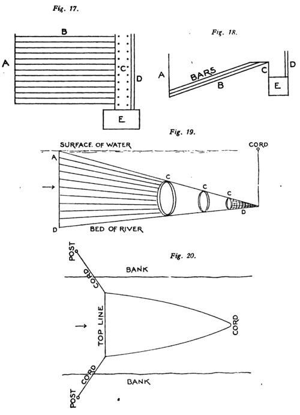
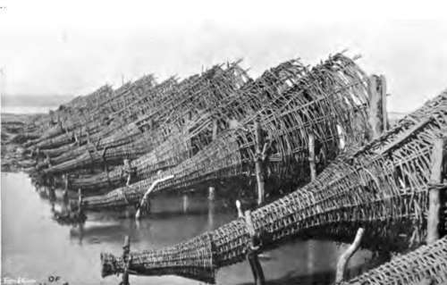
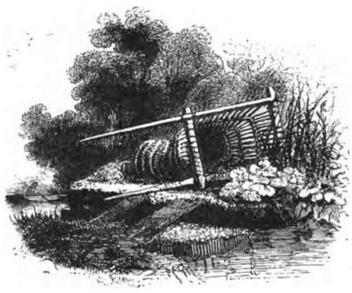
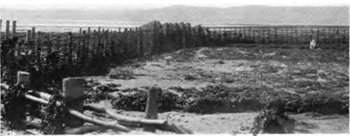
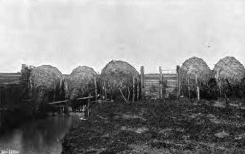

Chapter XXIII. Eel Trapping
Description
This section is from the book "Fishing", by Horace G. Hutchinson. Also available from Amazon: Fishing.
Chapter XXIII. Eel Trapping
As is well known eels breed in the sea. The young eels-elvers, as they are called-ascend in April and May. The adult eels descend to the sea to breed from June to December. The elvers only run on spring tides, the eels only descend when there is a fresh. This is about all that is known with certainty as to the life-history of the eel. On their ascent the elvers are captured in large numbers, and elver fishing is a special form of art. A high tide, a dark night, and smooth water are the three natural conditions required. The artificial conditions are an instrument that at first sight resembles a long-handled scoop, the bowl of which is covered with fine netting like a sieve. The elvers swim up in one great line, the width and depth of which vary, the size of the columns being of late years much less than was formerly the case, at least so it is said. The fisherman gets alongside the column and ladles out the elvers with his scoop. It looks delightfully simple, but there is more art in it than at first appears. An old hand will bring out his scoop half full, an amateur will only get one or two. The knack is to get the scoop below the line before lifting it up to work from underneath. On a good night very large quantities are caught. It is impossible to give numbers, but a catch of a hundredweight is not unknown. If any one will count the number of the elvers to a pound he will get some idea of what such a quantity represents. It should, however, be stated that really good nights are very few. It is very difficult to get all the natural conditions required for a good catch to occur at the same time. The elvers taken are cooked into a sort of cake, which some people regard as a delicacy, others merely think it a tasteless, gelatinous substance. If any one wants to try elver fishing, Gloucester is the best place to see it carried on-April and May the months.
The descending eels are caught in a different way. The main modes are fixed traps and fixed nets. The traps are usually placed in a mill-weir or dam, and consist of a series of iron bars through which the water is allowed to run; the bars are so close together that no eel can get through. These bars are on a slope, at the top is a trough, bored with holes through which the water runs, which leads to a bucket. Thus on the section, Fig. 17, A, is the sluice or flood-gate; B, the sloping bars; C, the trough; D, the upright bars ; E, the bucket. The ground plan on Fig. 18 makes it clear. To set the trap to work the sluices, A is pulled up, the water rushes through, bringing eels and everything else with it. They are washed into the trough and down the trough into the bucket. At intervals the sluices are shut down, the bucket pulled up, and emptied of its eels. Such is the construction. If properly placed and properly worked the trap is very deadly. Much depends on the river, the night, and the state of the water, but given favourable circumstances, it is a poor night's work not to catch from half a hundredweight to a hundredweight of eels.
The flood-gates should be placed in the part of the weir against which the main current of the river strikes. The fact of there being flood-gates makes a channel to them, but unless it is the main stream the catch is not so successful as it should be.
The flood-gates should be so constructed as to size and number that the main stream passes through them into the trap, for if it does not the largest number of eels will keep to the main stream and pass into the mill-race, and not into the trap. The sill of the flood-gates, that is, the entrance to the trap, must be level with the bed of the stream, for if it is not the eels which swim at the bottom will be turned aside down the mill-race.
Unless these three rules are observed in the construction of the trap, it will never take the quantity it ought to do, nor will it take the larger eels, for the reason that only the stragglers will pass into it, the main body will go down the mill-stream.
It is often a matter requiring a good deal of care and observation how best to place an eel trap. Sluices have been placed in the weir for other purposes, and are generally utilised, but it by no means follows they are in the best places. Still if they are there it is generally best to try to use them, as new sluices are expensive. If new ones have to be put in, or a trap constructed, then the rules mentioned above should be followed.
Eel nets are very large purse nets, gradually tapering to a point (Fig. 19). The mouth is some 20 to 60 feet across. It varies with the place where the net is used. It gradually tapers down into a bag some 4 or 5 feet long, tied at the end, having a diameter of about 9 inches. The upper part of the net is kept in position by two ropes, one to each corner, by which the net is moored to posts on each bank of the river, and kept in position. The lower line of the net is kept on the bottom of the river by means of heavy weights at the corners and along the line. If only placed at the corners the line does not keep on the bottom for its whole length, and so the eels go under and many are lost. The best way to sink it is to have a heavy weight at each corner, and a chain, like a heavy timber chain, fastened the whole length of the bottom line. For successful fishing it is essential that the lower line rests on the bottom for the whole width of the net. A place where the bed is level must be chosen, and the lower line of the net must lie on the bed of the river across the main channel,-if possible, a place where the river does not run very quickly, such as a long smooth pool with a level bottom. The mesh of the net should be about 2 inches from knot to knot in the upper part, so as to let leaves and rubbish pass through. After about 3 or 4 yards of this, according to the size of the net, the mesh should decrease to an inch till the first hoop is reached. Till then the net does not fish, it only guides. At the first hoop the mesh should decrease to half an inch from knot to knot. This size may be kept to the third hoop where the end of the net, the cod, is tied on. The cod should not be more than a quarter of an inch from knot to knot. The object of the hoops is to keep the net open so as to ensure the stream going through, and the eels passing in. The diameter of the hoops varies, the first would be usually about 4 feet, the second 2 feet 6 inches, and the third 1 foot; but the number and diameter depend on the size of the net. The lowest hoop is a double one, and is tied on to the net with the cord. When it is taken off there is a free passage through the net so that all the leaves and rubbish which the net collects, and which would choke it up, are washed out. Usually in fishing there is a slight weight made fast to the top line so as to keep it under water and let the leaves pass over. The leaves are on some rivers a great difficulty as they will soon fill up the net, and their weight, with the resistance of the water, will easily burst the net. At all costs, the net must be kept as free as possible.
To place the net for fishing it has to be in the part of the river down which the main current flows, a part which roughly is indicated by the line of the descending leaves. It has to stand up fairly staunch with the main stream going through it. Fig. 19 shows its position.
A, is the upper corner; B, the bottom; C C C, the hoops; D, the cord.
Fig. 20 shows how it is placed.
The top line is kept in its place by the cords which fasten it to the posts on each bank, the length of the cord determining the place at which the net is fixed. The net is made fast to the posts on one bank, and is paid out from a boat rowed across the stream until the other bank is reached, when it is made fast. The lower hoop is then taken into the boat, the net pulled out to its full length, and the cord tied on to the lowest hoop. A cork is fixed on a line attached to the cord to indicate its position and allow it to be examined without interfering with the net, and the net is then at work. It has to be carefully examined about every two hours, according as the eels are running or not. If they are coming in any number, and there are many leaves, it requires frequent examinations lest the net should get choked and burst. At least two men and a boat are required to look after it, one to attend to the net, the other to manage the boat. On a dark night with a strong stream it is a task not wholly without danger. The net is usually put in during September and October, just as the water begins to rise and get discoloured, and kept in until the freshet runs off. Most eels are caught on a rising water, on a falling very few indeed. A dark, quiet night is the best, and if it is the first freshet after a long drought in September and October, the quantity taken at times is very large indeed. Three-quarters of a ton taken between two nets, one above the other about a quarter of a mile apart, is the largest I have ever actually seen taken, but I have heard of much larger numbers. However carefully the nets are set, a large number of eels go by in some curious way. It is not unusual to see four or five nets placed one after the other in a short distance, say a mile, and it by no means follows that those highest up the stream take the largest number of eels. It is the set of the stream, a factor which varies with the height of the freshet, that determines the catch. Here, as in other fishing matters, experience is everything: a novice might put down an eel net in the best place and get very few, an old hand would set his net lower down stream than that of the novice and have a large catch.
Set Trap And Eel Nets
48.- Eel Basket Traps.
This is not the place to go*into the question of the migration of eels, a subject which raises some very interesting points, and one on which very little is known; but it may be said that eels begin to run seaward in June, that then the eels that descend are all small; this continues through July. If there is a fresh in August the eels get larger, while in September and October eels of all sizes from the largest, 2 lbs. or 3 lbs., to the smallest, a quarter of a pound, are caught. The size of these different eels, the age, and the conditions under which they migrate, are all questions deserving of study, and on which information is wanted.
49. - On The Severn
50.- In Position
Continue to:
- prev: Chapter XXII. Angling For Eels
- Table of Contents
- next: Chapter XXIV. British Sea Fish. The Grey Mullets (Mugii)